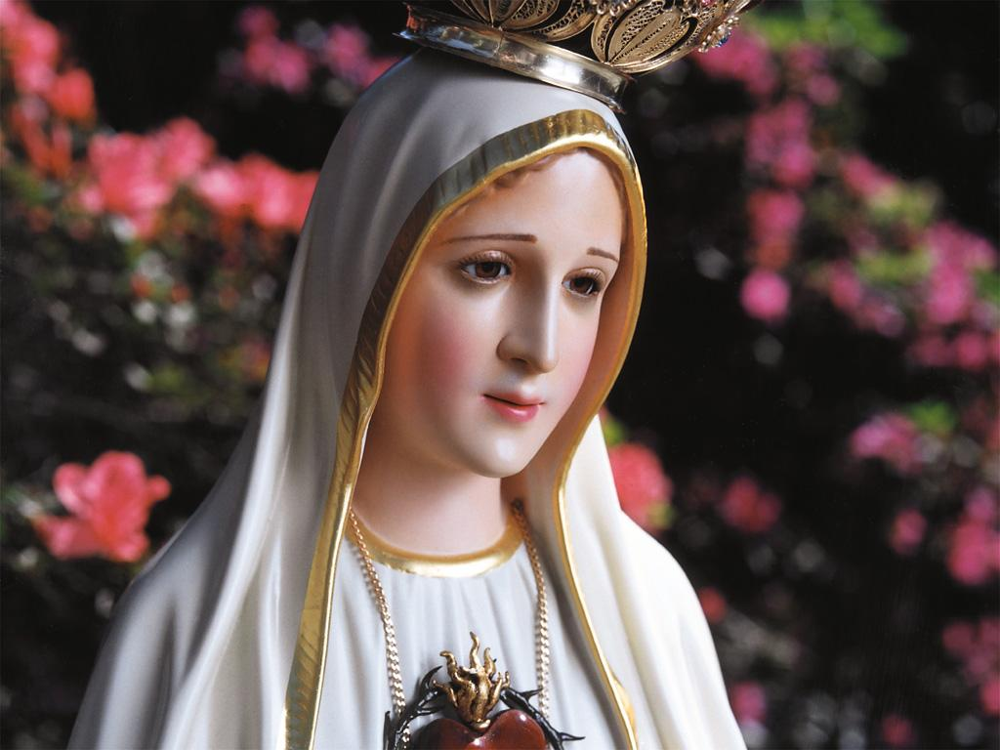

E todos três responderam com voz forte
e sonora:“Queremos”.
E todos três responderam com voz forte
e sonora:“Queremos”.A LUZ DA MENSAGEM

Por essa razão, sob o ponto de vista teológico o CORAÇÃO IMACULADO DE MARIA não deve ser considerado como uma “devoção” a mais. Tanto o CORAÇÃO DE MARIA como o CORAÇÃO DE JESUS, representa na melhor teologia a essência do “amor”. Isto porque o “coração” sempre foi considerado o símbolo natural do amor, e é através dele que o amor se manifesta. Assim sendo, esta verdade nos leva a compreender que em Fátima, a VIRGEM MARIA nos trouxe a Mensagem do Seu CORAÇÃO.
VIVÊNCIA DA MENSAGEM
O principal desígnio Divino é que a humanidade seja santa e que DEUS possa viver com ela, que as pessoas participem e vivam na Santidade de DEUS. Esta verdade torna evidente que a plena realização do homem e da mulher consiste na santidade, na visão de DEUS, para alcançar assim, pelo caminho de uma vida espiritual cada vez mais perfeita, a beleza original de sua alma. Desde a origem, cada criatura humana tem a sua alma, reflexo da vida Divina, porque foi criada à imagem de DEUS. Na caminhada existencial pelas veredas do mundo as pessoas deformam e mancham a beleza da sua alma. Ao ser purificada pela graça, a alma vai regressando a sua origem de ser novamente a imagem de DEUS, a imagem da beleza Divina. E desse modo, quanto mais se purificar, cada vez mais vai recuperando a sua dignidade, por ser o único ser criado à imagem de DEUS. E assim, invadida pela graça do SENHOR, a alma também será capaz de ver e participar das alegrias Divinas.
São Gregório de Nissa, dizia: “Unicamente tú, alma humana, foste feita a imagem da natureza, que ultrapassa cada inteligência, semelhança da imperecível beleza, moldagem da verdadeira Divindade, vaso da vida bem-aventurada, imagem da Luz verdadeira; a Ela contemplando serás como Ela é, porque pelo reflexo que nasce da Tua pureza imitarás AQUELE que brilha em ti. Nenhuma coisa que existe é tão grande, que possa ser comparada com a tua grandeza”.
TRANSGRESSÃO DA ORDEM
O pecado é ofensa a DEUS e traz como consequência a privação da glória de DEUS, porque foi à causa dos terríveis e cruéis sofrimentos de CRISTO e de MARIA, além de ter concretizado uma abominável desordem na criação, no mundo e nos Anjos, e por isso, exige “reparação” . Este fato é o conceito da Mensagem de Fátima, que os pastorzinhos realizaram de muitos modos:
1 – COMO PENITÊNCIA - NOSSA SENHORA disse as crianças para que divulgassem a toda humanidade: “Que nos emendássemos, que não ofendêssemos mais a DEUS, que já estava muito ofendido, e que rezassem o Terço e pedissem perdão dos pecados”.
2 – EM FORMA DE SACRIFÍCIO OU MORTIFICAÇÃO:
2.1 - Oferecendo o almoço aos pobres.
2.2 – Comendo coisas amargas.
2.3 – Deixando de beber água num apreciável espaço de tempo.
2.4 – Usando a corda com nós, amarrada ao corpo.
2.5 – Suportando a grave doença.
2.6 – Sentindo o abandono dos pais na prisão.
E muitas outras mortificações, que são exemplos vivos de sacrifícios.
Para se compreender com clareza este apelo de “reparação” ao CORAÇÃO IMACULADO DE MARIA, vamos analisar a luz da Sagrada Escritura, algumas questões fundamentais.
Em nome de DEUS, o Anjo da Paz e posteriormente NOSSA SENHORA introduziu os três pastorzinhos no apelo da “reparação”. No primeiro diálogo com as crianças, a VIRGEM MARIA perguntou:
“Quereis oferecer-vos a DEUS para suportar todos os sofrimentos que ELE quiser enviar-vos, em ato de reparação pelos pecados com que ELE é ofendido, e de súplica, pela conversão dos pecadores?”
E todos três responderam com voz forte
e sonora:“Queremos”.
A Irmã Lúcia disse: “DEUS respeita o dom da liberdade que ELE mesmo nos deu e não força ninguém aceitar uma Missão Especial, que ELE queira confiar. Assim, deste mesmo modo, ELE procedeu com NOSSA SENHORA, quando mandou o Anjo Lhe perguntar, se Ela aceitava ser a MÃE DO MESSIAS”.
É a imensa delicadeza Divina, que trata dignamente todas as criaturas, respeitando os dons com que as favoreceu. O SENHOR não quer ser servido por força, mas por amor, porque DEUS é Amor e só o que se faz por amor a ELE e ao próximo por ELE, é que LHE agrada, e por ELE é aceita e tem valor na Sua Presença.
Os pastorzinhos, sem se preocuparem com o grau e a natureza dos sofrimentos, responderam decididamente: “Sim, queremos”. Sem dúvida, foi à voz do coração, do amor puro e dedicado, sem qualquer interesse.
Tal como os pastorzinhos, assim também nos devemos colaborar com o SENHOR, para completarmos o que ainda falta na grande Obra Redentora de CRISTO, ou seja, a nossa parte, referente ao corpo místico da Sua Igreja, para que a Redenção do SENHOR fique completa.
Ao longo de toda narrativa das teofanias de Fátima, fica evidente a santidade dos pastorzinhos, que profundamente sensibilizados pela entrega de JESUS na Cruz, desenvolveu no interior de cada um deles, aquela disponível prontidão para oferecer, em união com JESUS sofredor, os seus pequenos e grandes sacrifícios, em reparação dos pecados cometidos pela humanidade e para obter a conversão dos pecadores. Eles entenderam com absoluta clareza a necessidade da “reparação”, quando lhes foi comunicado o sentido da “adoração a DEUS” que é ultrajado e ignorado diariamente, por tantas pessoas intencionalmente.
Por outro lado, é importante observar que a maneira daquelas crianças se exprimirem com NOSSO SENHOR, denota outro traço característico da relação que tinham com DEUS. Eles realmente falavam a sós com NOSSO SENHOR e com NOSSA SENHORA, mesmo que não OS estivesse vendo, porque para eles, estavam falando com pessoas verdadeiras. Assim, a oração que faziam não era uma formalidade, mas um sincero e honesto colóquio íntimo, feito de coração a coração.
BEATIFICAÇÃO DO FRANCISCO E DA JACINTA E O 3º SEGREDO
Nos dias 12 e 13 de Maio de 2000, no Santuário de Fátima, em Portugal, na presença de um milhão de peregrinos, entre os quais: nove Cardeais, muitos Bispos e mais de mil e duzentos Sacerdotes Concelebrantes, o Papa João Paulo II elevou Francisco e Jacinta a honra dos altares. Também estavam presentes: a Irmã Lúcia com 93 anos de idade, o Presidente da Republica de Portugal e diversas autoridades civis e militares.
No final da solene Concelebração Eucarística, o Cardeal Ângelo Sodano, Secretário de Estado do Vaticano, pronunciou um discurso com uma surpreendente notícia: “Na circunstância solene da vinda do Papa João Paulo II a Fátima para a Beatificação do Francisco e da Jacinta, Sua Santidade incumbiu-me de transmitir-lhes uma preciosa notícia, porque também ele quer dar a esta peregrinação, o valor de um renovado preito de gratidão a NOSSA SENHORA, pela proteção que Ela lhe tem concedido durante os anos de pontificado”.
“O Terceiro Segredo de Fátima refere-se, sobretudo à luta dos sistemas ateus contra a Igreja e os cristãos e descreve os sofrimentos imensos das testemunhas da fé do último século do segundo milênio. É uma Via-Sacra sem fim, guiada pelos Papas do século vinte. Segundo a interpretação dos pastorzinhos, recentemente confirmada pela Irmã Lúcia, o Bispo vestido de branco, que reza por todos os fiéis, é o Papa. Também ele, caminhando penosamente para a Cruz por entre os cadáveres dos martirizados (bispos, sacerdotes, religiosos, religiosas e várias pessoas seculares), cai por terra como morto sob os tiros de uma arma de fogo”.
Com estas palavras, o Cardeal Sodano, em nome do Papa revelava o conteúdo do 3º Segredo de Fátima.
O Sumo Pontífice, acompanhando atentamente os acontecimentos no mundo já sentia desenhar as terríveis perseguições contra a Igreja e o abominável crescimento do ateísmo em todas as partes.
Depois do atentado do dia 13 de Maio de 1981, na Praça de São Pedro no Vaticano, quando o Papa João Paulo II foi atingido por dois tiros mortais, pareceu claramente ao Pontífice, que “foi uma mão Materna que guiou a trajetória da bala”, permitindo que o “Papa agonizante” , se detivesse “no limiar da morte”. Aquela mão materna, a Mão da MÃE DE DEUS e nossa Mãe, naquele momento, dirigiu a direção do projétil e deu ao Papa uma nova vida, um novo nascimento pela graça Divina.
No dia 26 de Março de 1984, quando o Bispo de Fátima-Leiria passava por Roma, o Papa lhe entregou a bala que tinha ficado no jipe depois do atentado, para ser guardada no Santuário Mariano em Fátima. Por iniciativa do Bispo, a bala foi encastoada na coroa da imagem de NOSSA SENHORA, que está na Capelinha das Aparições.
Estas verdades nos fazem compreender que a tentativa de assassinato do Papa João Paulo II, estava contida nas Mensagens de Fátima, que revelava as transgressões e os pecados do mundo que ofendem terrivelmente ao CRIADOR e exigem “reparação”.
TEOLOGIA DA REPARAÇÃO DO CORAÇÃO IMACULADO DE MARIA
De todo o exposto, torna-se evidente concluir que toda Mensagem de Fátima “é coração”, “é amor” , porque nos revela a imensidão carinhosa e abrangente do CORAÇÃO DE MARIA. Cedo, os primeiros estudiosos e investigadores descobriram a “luz” que ilumina toda a Mensagem: o “CORAÇÃO DE MARIA”, que sofre por causa de Seu FILHO JESUS que é ofendido pelos muitos pecados e também, por causa dos Seus filhos pecadores que se encontram em perigo de perdição eterna. Esta é a terrível dor cruel que domina o IMACULADO CORAÇÃO DA VIRGEM MÃE DE DEUS.
Sem qualquer dúvida, a Mensagem está completa, pois contém as Aparições do Anjo e da SANTÍSSIMA VIRGEM, na Cova da Iria, nos Valinhos, no Poço do Arneiro e na Loca do Cabeço, assim como, as mensagens que foram dirigidas a Irmã Lúcia em Pontevedra e Tuy, e também, descreve de maneira admirável a vida heróica dos bem-aventurados Francisco e da Jacinta, que se entregaram sem reservas, ao cumprimento dos pedidos de NOSSA SENHORA. A “luz” que iluminou os seus caminhos foi sempre o CORAÇÃO DE MARIA , como lhes indicou a Aparição: “JESUS quer estabelecer no mundo a devoção a Meu IMACULADO CORAÇÃO”, e fez-lhes compreender que “era o IMACULADO CORAÇÃO DE MARIA, ultrajado pelos pecados da humanidade, que queria reparação”.
O LUGAR DE MARIA NO DESÍGNIO DE DEUS E NO MISTÉRIO DE CRISTO
Toda mensagem comunicada ao
povo de DEUS, por mais simples que possa parecer, dirige-se ao
“homem todo”, ou seja, “a totalidade da pessoa  humana”, a todas as suas faculdades, e antes de tudo, a sua inteligência e ao
seu discernimento. A Tradição Católica sempre defendeu o trabalho da inteligência
para penetrar no âmbito da “fé”
. Por essa razão, a Mensagem de Fátima deve
também ser entendida, como um
“forte apelo à inteligência”, pelo fato
de estar iluminando a mente com as diferentes verdades da Fé Católica. Assim, as
verdades evidenciadas em Fátima são um verdadeiro manancial para o aprofundamento
da “fé”.
humana”, a todas as suas faculdades, e antes de tudo, a sua inteligência e ao
seu discernimento. A Tradição Católica sempre defendeu o trabalho da inteligência
para penetrar no âmbito da “fé”
. Por essa razão, a Mensagem de Fátima deve
também ser entendida, como um
“forte apelo à inteligência”, pelo fato
de estar iluminando a mente com as diferentes verdades da Fé Católica. Assim, as
verdades evidenciadas em Fátima são um verdadeiro manancial para o aprofundamento
da “fé”.
No seu conteúdo, a Mensagem não trata de novas revelações, mas das verdades fundamentais da Sagrada Escritura e da Tradição Cristã, que menosprezadas e esquecidas, devem ser despertadas na consciência de todas as pessoas. MARIA se dirige incondicionalmente a toda humanidade e apela a todos, com sua Mensagem de Salvação. E primordialmente, não pediu outra coisa senão o fundamental contido na Sagrada Escritura: a Santificação do Nome de DEUS. Pede a humanidade para ser santo como DEUS é Santo. Apelo dirigido a todas as pessoas: ser santo pelo sacrifício, pelo oferecimento e pela própria vontade. Sem esta santificação ninguém poderá contemplar DEUS.
NOSSA SENHORA apresenta o Seu CORAÇÃO IMACULADO, apontando na direção do DEUS transcendente com o CRISTO Redentor numa única e sólida corrente amorosa. Por conseguinte, todos os pecados e ofensas perpetradas contra DEUS e contra CRISTO atingem também o CORAÇÃO IMACULADO DE MARIA. Por isso, a “reparação” oferecida a DEUS PAI e ao Divino CORAÇÃO DE JESUS, deve também ser dirigida ao IMACULADO CORAÇÃO DA MÃE DE DEUS.
A VIRGEM MARIA disse aos pastorzinhos: “JESUS quer estabelecer no mundo a devoção ao Meu IMACULADO CORAÇÃO”.
Estabelecer no mundo a devoção ao IMACULADO CORAÇÃO DA VIRGEM MARIA significa levar as pessoas a uma plena consagração de conversão, de doação, íntima estima e sincera veneração, com um amor puro, ardente e dedicado.
Todos sabem o que representa na família o “coração da mãe”: é o amor sempre presente! Na verdade, é o amor que leva a mãe a desvelar-se com todos os cuidados junto ao berço de um filho, a sacrificar-se, a dar-se totalmente e a correr em defesa de sua criança. Todos os filhos confiam no coração da mãe, porque sabem que tem nele, um lugar de predileção. O mesmo acontece com a VIRGEM MARIA, MÃE DE DEUS e Nossa MÃE. “O Meu IMACULADO CORAÇÃO será o teu refúgio e o caminho que te conduzirá a DEUS”. Portanto, o CORAÇÃO DE NOSSA SENHORA, é para todos os Seus filhos, o refúgio e o caminho que conduzirá cada um a DEUS.
Com essa afirmação, o CORAÇÃO DE MARIA é de algum modo, o coração de uma “geração especial”, cujo primeiro “fruto” é CRISTO, o VERBO DE DEUS. E é deste “fruto” que todas as gerações unidas e abrigadas no CORAÇÃO DA MÃE hão de se alimentar, como disse JESUS: “EU Sou o Pão da Vida. Quem come a Minha Carne e Bebe o Meu Sangue permanece em MIM e EU nele. Assim como, EU vivo pelo PAI, assim também o que ME come viverá por MIM”. (Jo 6,48.56-57) E este “viver" por CRISTO é também “viver” por MARIA, porque JESUS tomou o Corpo e o Sangue da Sua MÃE, que LHE deu a humanidade e a vida. Então MARIA é a Mãe desta descendência destinada por DEUS a esmagar a cabeça da “serpente infernal”.
Por outro lado, no CORAÇÃO DE MARIA se iniciou a Obra Divina de Redenção da humanidade de todas as gerações, a partir do momento em que NOSSA SENHORA disse “Sim” ao Plano de DEUS. Porque neste sagrado momento , "o VERBO se fez carne e habitou entre nós”. (Jo 1,14) E assim, na mais estreita união, o Poder de DEUS começou em MARIA a Obra de nossa Redenção. O sangue de MARIA sustentou CRISTO, as palpitações do CORAÇÃO DA MÃE encontravam eco no CORAÇÃO DO FILHO que pulsava na mesma cadência, da mesma forma que as alegrias de CRISTO se misturavam no sorriso aberto e carinhoso da MÃE DO FILHO DE DEUS. Por isso, MARIA feita “uma” com o Seu FILHO JESUS é “Corredentora” do gênero humano.
PROFANAÇÃO E BLASFÊMIA DO SANTO NOME DE DEUS
A Mensagem de Fátima, no conceito geral até 1942, coloca o pecado e a penitência em primeiro plano. Entretanto, logo após a publicação dos escritos da Irmã Lúcia, descobrimos nas Mensagens Divinas a sua motivação amorosa mais profunda e de sua projeção na economia da salvação para uma humanidade carecida de novas graças para a sua redenção. O pecado não é apenas uma palavra, mas uma verdadeira e abominável blasfêmia contra DEUS, uma profanação do Santíssimo Nome do SENHOR.
NOSSA SENHORA fala de um único pecado: “da blasfêmia, dos ultrajes, sacrilégios e indiferenças”, pecados cometidos contra CRISTO e contra o CORAÇÃO IMACULADO DE MARIA, e fala deles com tristeza, com voz suplicante, como se fosse uma materna queixa a todos os seus filhos, numa súplica amorosa de conversão do coração.
Então, alguém poderia perguntar: por que motivo deve ser feita a “reparação” em “representação” (ou seja, por delegação ou seja, atuando em nome de uma ou mais pessoas, no caso da humanidade pecadora) pelas blasfêmias cometidas pelos outros?
NOSSA SENHORA quis em Fátima esclarecer com bastante nitidez a força do pecado, não deixando oculta nenhuma face, a fim de que não houvesse dúvidas no coração da Igreja. Cada pessoa peca diretamente contra DEUS, antes de pecar contra uma criatura ou uma norma da moral. Desde o Antigo Testamento, a Lei de Moisés mostra esta realidade com plena lucidez: a pessoa ou cumpre a Lei inteiramente ou não a cumpre. Não é possível cumpri-la em parte. A relação entre DEUS e as pessoas é fundamental. Quem transgredir a Lei num só ponto está transgredindo-a inteiramente. Por conseguinte a maldição que cai sobre todos os pecados cometidos é a mesma que cai sobre o pecado contra um único Mandamento. Da mesma forma, em sentido contrário, o sacrifício reparador desagrava todas as violações da Lei. A intensidade do pecado e da reparação é medida e compensada pela Justiça Divina. A Lei ou os Mandamentos, não são apenas uma lista de normas impostas, mas a Voz Pessoal de DEUS, que guia, orienta e zela por cada indivíduo. Cada um experimenta no seu interior a força do Amor de DEUS, como uma exigência incondicional, que atrai a SI os homens e as mulheres, pela Lei ou Mandamento da Aliança, para que ouçam a Sua Voz e atendam as Suas prescrições: “Sou EU, o SENHOR, vosso DEUS que vos santifica”. (Lv 20, 8b) E o que ELE diz vale para sempre.
No Novo Testamento, de forma muito mais clara, o Amor de DEUS pela humanidade é a única Lei a seguir. O Evangelista São João chega a afirmar : “É nisto que está o amor: não fomos nós que amamos a DEUS, mas foi ELE Mesmo que nos amou e enviou o Seu próprio FILHO como expiação pelos nossos muitos pecados”. (1 Jo 4, 10) “DEUS é Amor, quem permanece no amor permanece em DEUS, e DEUS nele”. (1 Jo 4,16)
JESUS nos ensina que toda Lei está contida no amor a DEUS e ao próximo por amor de DEUS, ou seja, amamos o próximo porque ele é filho de DEUS como nós somos e, por isso, ele é o nosso irmão. Portanto, este é o amor que deve ser cultivado e que nos propiciará observar todos os Mandamentos, porque todos eles se relacionam com DEUS e o próximo.
A REPARAÇÃO COMO MEIO DE SALVAÇÃO
NOSSA SENHORA não pede uma “reparação” simbólica, mas a viva realidade mística, que é o nosso oferecimento total a DEUS Santo, Eterno, que é Amor. O nosso oferecimento contém em si a "reparação" que se oferece simultaneamente a DEUS, ao CORAÇÃO DIVINO DE JESUS e ao CORAÇÃO IMACULADO DE MARIA. É através deste oferecimento que se realiza a verdadeira “reparação” e não através de ações reparadoras externas. Trata-se da realidade mística de “reparação”, o oferecimento em comunhão com o sacrifício da Cruz de JESUS, que o Anjo ensinou aos pastorzinhos através daquela magnífica oração, que vamos repeti-la, porque é linda e de valor incomensurável:
“SANTÍSSIMA TRINDADE, PAI, FILHO e ESPÍRITO SANTO, eu Vos adoro profundamente e Vos ofereço, o preciosíssimo Corpo, Sangue, Alma e Divindade de NOSSO SENHOR JESUS CRISTO, presente em todos os sacrários da Terra, em reparação dos ultrajes, sacrilégios e indiferenças com que ELE Mesmo é ofendido. E pelos méritos infinitos do Seu SANTÍSSIMO CORAÇÃO e do CORAÇÃO IMACULADO DE MARIA, peço-Vos a conversão dos pobres pecadores”.
MARIA aponta o Seu CORAÇÃO IMACULADO com o objetivo de acelerar a nossa interiorização, conduzindo o nosso olhar para o interior, para o nosso próprio âmago e assegurar-nos, que somente a partir dele, no mais íntimo de nós mesmos, poderemos realizar a nossa purificação, consagração, reparação e a nossa santificação.
A NECESSÁRIA IDENTIDADE DO SACRIFÍCIO, DA ADORAÇÃO E DA REPARAÇÃO.
 Todo ser humano
tem uma Alma e um Corpo, e ninguém existe sem eles. O Corpo nasce do relacionamento
amoroso de nossos pais, santificado pelo Sacramento do Matrimônio. A Alma vem de
DEUS, é invenção Divina. Significa dizer que cada pessoa, tem uma parte humana e
uma Divina, e por ser de DEUS, nela está gravado o Nome do SENHOR.
Todo ser humano
tem uma Alma e um Corpo, e ninguém existe sem eles. O Corpo nasce do relacionamento
amoroso de nossos pais, santificado pelo Sacramento do Matrimônio. A Alma vem de
DEUS, é invenção Divina. Significa dizer que cada pessoa, tem uma parte humana e
uma Divina, e por ser de DEUS, nela está gravado o Nome do SENHOR.
Por outro lado, o pecado antes de ser uma violação de uma lei moral ou de ser uma ofensa a uma criatura, fundamentalmente é uma blasfêmia contra o Nome de DEUS. Por isso, também a reparação ou a anulação do pecado, antes de ser um ato reparador da ordem criada, é, sobretudo, a santificação e glorificação do Nome de DEUS. A reparação como santificação do Nome de DEUS, deve ser necessariamente cumprida, porque sendo nossa Alma criada à imagem e semelhança do CRIADOR, em CRISTO, ela se realiza de fato, porque DEUS a transmite a criatura humana, ao santificar o interior da pessoa. O Nome de DEUS significa a Sua Santidade. É o próprio DEUS que repara e santifica, atraindo a criatura humana a SI e lhe comunicando a graça, por meio do ESPÍRITO SANTO.
O ato de “Adoração” é na sua essência, um ato de humildade, em que a pessoa reconhece o seu nada diante da grandeza infinita do SENHOR DEUS. É um ato primeiro e fundamental, que somente se aprende pela prática dos atos próprios e meritórios da comunhão com o SENHOR, como aconteceu na entrega de CRISTO ao PAI ETERNO.
Sem este fundamento da “Adoração”, as outras práticas humanas, como as virtudes, devoções, boas obras, sacrifícios, orações, consagrações, etc., não têm merecimento e não poderão nunca purificar e reparar os pecados, porque na raiz fica a mentira fundamental da autonomia da criatura. O pecador sempre acredita que ele não tem pecado, porque age com naturalidade!
Em Fátima, o primeiro e decisivo pedido de NOSSA SENHORA a humanidade, foi o oferecimento total da pessoa humana a DEUS transcendente.
Assim, a verdadeira santificação, a qual faz com que a pessoa se entrega totalmente a DEUS na adoração, revelando que pertence ao SENHOR, corresponde à destruição do mundo da mentira, do cinismo e da ambição, a anulação de uma falsa autonomia humana, proveniente do próprio “eu”, cevado pela maldade, que faz a mente da pessoa considerar-se maior do que tudo. Então, entregar-se totalmente a DEUS na adoração é justamente abolir toda suficiência humana, não oferecendo espaço a mentira e a maldade. E só assim, e de nenhum outro modo, é que o pecado pode ser reparado. Assim sendo, esta “adoração reparadora” é a verdadeira demonstração de que a pessoa, no seu ser e na sua vida, pertence inteiramente a DEUS e só ELE o justifica pela Sua Infinita Misericórdia.
A ADORAÇÃO REPARADORA É TAMBÉM EFICAZ PARA SALVAR OS OUTROS
A eficácia salvadora da adoração reparadora em benefício de outras pessoas, assim como a sua plena realização, está fundamentada na realidade em que o ser humano é a imagem e semelhança de DEUS, em CRISTO, que é o Salvador da humanidade de todas as gerações. É neste poder dinâmico, em que as forças espirituais podem ser voltadas para DEUS, ou desviadas DELE, é que se encontram o fundamento e a possibilidade de reparação de uns pelos os outros. A adoração reparadora é por si mesma, a união mística da pessoa com CRISTO, no seu ESPÍRITO SANTO, que se realiza continuamente no decorrer da vida sobre a Terra. Neste processo vivo e dinâmico, o próprio CRISTO age, não somente tendo em vista a reparação e santificação dos membros das outras pessoas, mas também realizando a conversão do coração, a salvação e uma real transformação.
Este fato descortina a realidade do reinado do ESPÍRITO DE DEUS sobre a humanidade. Por isso também a plena eficácia salvífica só acontecerá se houver uma entrega definitiva e total da criatura ao CRIADOR.
Foi num só ESPÍRITO que fomos batizados, a fim de formarmos um só corpo, o Corpo Místico de CRISTO. Por essa razão, a adoração reparadora para salvar os pecadores funciona plenamente, porque ela se realiza pela força Divina de JESUS e não pela força das pessoas que rezam e suplica o benefício para os outros. A oração feita em nome de NOSSO SENHOR é, realmente, a oração de união com CRISTO. Nela está a força real do Nome de CRISTO, que torna a oração infalivelmente eficaz.
A força do sofrimento reparador de CRISTO na Cruz (ELE assumiu todos os pecados cometidos pela humanidade, redimindo com o Seu Sangue todas as gerações) foi verdadeiramente eficaz e ensina aos membros do Seu Corpo Místico, como é válida a reparação dos pecados através do sofrimento. Este acontecimento nos permite também deduzir que a Aliança de DEUS com a humanidade é essencialmente uma aliança reparadora pelo sacrifício.
E justamente pelo fato desta reparação ser absolutamente necessária a salvação que MARIA, com tanta insistência, a pediu em Fátima: "uma entrega total a DEUS num sacrifício reparador pela salvação dos pecadores”.
Também o Anjo já havia recomendado as crianças: “Oferecei constantemente ao Altíssimo, orações e sacrifícios de tudo o que puderdes, em ato de reparação pelos pecados com que ELE é ofendido e de súplica pela conversão dos pecadores”...
O QUE DEUS ESPERA DE NÓS
Todo ser humano nasce para cumprir uma finalidade e merecer a recompensa Divina pelo seu desempenho responsável, dedicado e amoroso. Este procedimento lhe ensejará, ainda em vida, receber a carinhosa atenção do SENHOR, que infundirá mais graças em sua existência e vigor para cumprir dignamente a sua missão existencial. O ESPÍRITO DE DEUS penetra e enche o coração humano, estimulando sentimentos de adoração ao SENHOR, seja na Igreja, no Santuário, no escritório ou na solidão de um refúgio. Quando DEUS é encontrado na profundidade da alma pelo coração humano, mesmo sem vislumbrar a imagem Divina, a criatura sentirá que ELE está presente e SE comunica e, então, experimentará a SUA adorável e inefável companhia que ocupará a sua mente e todo o espaço do seu ser. A presença Divina convida todos os seus filhos a conversão do coração e a buscar intensamente a reparação dos pecados cometidos contra o SENHOR DEUS e contra o IMACULADO CORAÇÃO DE MARIA. E com o mesmo objetivo de consolar e reparar os SAGRADOS CORAÇÕES, também pelo sofrimento e a adoração reparadora pessoal, cada um deve se esforçar contribuindo para a salvação dos seus irmãos, daqueles que estão mais distantes, dos que não conhecem o SENHOR e primordialmente dos pobres pecadores.